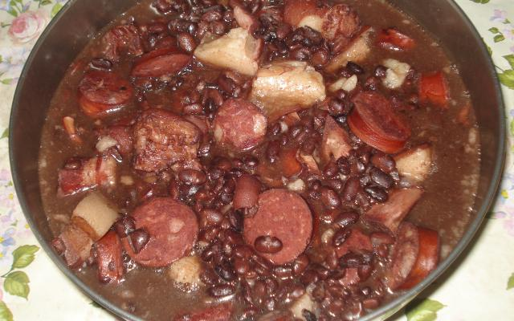

Feijoada Típica

Feijoada Típica para o fim de semana com a família!
Ingredientes (8 porções)
- 1 kg de feijão preto
- 2 línguas defumadas ou salgadas
- 1/2 kg de costelinha de porco salgada
- 1/2 kg de lingüiça calabresa defumada
- 1/4 kg de toucinho defumado
- 1 rabo de porco salgado
- 3 cebolas cortadas em cubos
- 4 folhas de louro
- 1/2 xícara de óleo ou banha de porco
- Água o quanto baste
- 1 kg de carne seca
- 1/2 kg de lombo de porco salgado
- 2 paios
- 2 pés de porco salgados
- 2 orelhas de porco salgadas
- 3 dentes de alho picados
- Pimenta malagueta amassada (opcional)
Modo de preparo (2 h)
- Escolha o feijão e deixe de molho por 12 horas.
- Lave bem as carnes salgadas, corte em pedaços e deixe de molho em água por 12 horas, trocando a água pelo menos duas vezes.
- Coloque o feijão para cozinhar em bastante água com as folhas de louro.
- Em uma panela à parte, cozinhe por ½ hora as carnes salgadas, escorra a água e reserve.
- Quando o feijão estiver começando a amolecer, coloque as carnes, a lingüiça e o paio e deixe ferver em fogo brando até estar tudo bem cozido (leva algum tempo: de 2 a 3 horas).
- Esquente o óleo ou banha de porco e refogue os temperos.
- Coloque uma concha do feijão, amasse bem e deixe ferver despeje na feijoada e deixe ferver por mais 30 minutos.
- Sirva bem quente acompanhado de couve picada fina e refogada, farinha de mandioca crua, gomos de laranja e uma cerveja bem gelada.